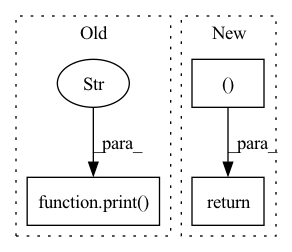

Pattern ID :3159

Before Change
tar_candit_pro = self.prob_mlp(feat_in_repeat).squeeze(-1) // [batch_size, self.N_tar, 1]
tar_offset_mean = self.mean_mlp(feat_in_repeat) // [batch_size, self.N_tar, 2]
print("tar_candit_pro size: ", tar_candit_pro.size())
print("tar_offset_mean size: ", tar_offset_mean.size())
// compute the prob. of normal distribution
d_x_dist = Normal(tar_offset_mean[:, :, 0], torch.tensor([1.0])) // [batch_size, self.N_tar]
d_y_dist = Normal(tar_offset_mean[:, :, 1], torch.tensor([1.0])) // [batch_size, self.N_tar]
After Change
// p = tar_candit_pro * d_x_dist.log_prob(d_x) * d_y_dist.log_prob(d_y)
_, indices = tar_candit_prob.topk(self.M, dim=1)
return tar_candit_prob, d_x, d_y, indices
// todo: offset_gt for every tar_candidate
def loss(self,
feat_in: torch.Tensor,
In pattern: SUPERPATTERN
Frequency: 4
Non-data size: 3
Instances
Fragment ID: 10204779
Project Name: henry1iu/tnt-trajectory-prediction
Commit Name: 80b9bc9194db403722ff2868d67f8e92c73f17a7
Time: 2021-04-06
Author: liu.jb.henry@gmail.com
File Name: core/model/layers/target_prediction.py
M Class Name: TargetPred
N Class Name: TargetPred
M Method Name: forward(3)
N Method Name: forward(3)
M Parent Class: nn.Module
N Parent Class: nn.Module
M File Name: core/model/layers/target_prediction.py
N File Name: core/model/layers/target_prediction.py
M Start Line: 49
M End Line: 68
N Start Line: 52
N End Line: 72
'>
Before Change
//// perform addition to calculate the score
// hidden_with_time_axis shape == (batch_size, 1, hidden_dim)
print("EncOutput", enc_output.shape)
hidden_with_time_axis = hidden.permute(1, 0, 2)
print("HiddenTimeaxis:", hidden_with_time_axis.shape)
// score: (batch_size, max_length, hidden_dim)
score = torch.tanh(self.W1(enc_output) + self.W2(hidden_with_time_axis))
After Change
// output shape == (batch_size * 1, output_dim)
output = self.fc(output)
return output, hidden
class Seq2Seq(nn.Module):
def __init__(self, encoder, decoder, device,
'>
Fragment ID: 10204778
Project Name: ai4bharat/indiannlp-transliteration
Commit Name: 362bfb7c7db016b89d292d207391627d0d2d3006
Time: 2020-03-25
Author: josephgeobenjamin@gmail.com
File Name: algorithms/recurrent_nets.py
M Class Name: Decoder
N Class Name: Decoder
M Method Name: forward(4)
N Method Name: forward(4)
M Parent Class: nn.Module
N Parent Class: nn.Module
M File Name: algorithms/recurrent_nets.py
N File Name: algorithms/recurrent_nets.py
M Start Line: 81
M End Line: 115
N Start Line: 116
N End Line: 132
'>
Before Change
print("lstm_output is nan:", torch.isnan(lstm_output).any()) if debug else None
action_type_logits, action_type, autoregressive_embedding = self.action_type_head(lstm_output, scalar_context)
print("action_type:", action_type) if debug else None
delay_logits, delay, autoregressive_embedding = self.delay_head(autoregressive_embedding)
queue_logits, queue, autoregressive_embedding = self.queue_head(autoregressive_embedding, action_type, embedded_entity)
After Change
units=units, target_unit=target_unit, target_location=target_location)
if multi_gpu_supvised_learning:
return action_type, action_type_logits, delay_logits, queue_logits, \
units_logits, target_unit_logits, target_location_logits
if return_logits:
'>
Fragment ID: 10204774
Project Name: liuruoze/mini-alphastar
Commit Name: b2d9d9a6dd94fc63f211c927f050c9857ef69d6d
Time: 2021-11-13
Author: liuruoze@163.com
File Name: alphastarmini/core/arch/arch_model.py
M Class Name: ArchModel
N Class Name: ArchModel
M Method Name: forward(10)
N Method Name: forward(9)
M Parent Class: nn.Module
N Parent Class: nn.Module
M File Name: alphastarmini/core/arch/arch_model.py
N File Name: alphastarmini/core/arch/arch_model.py
M Start Line: 91
M End Line: 123
N Start Line: 88
N End Line: 122